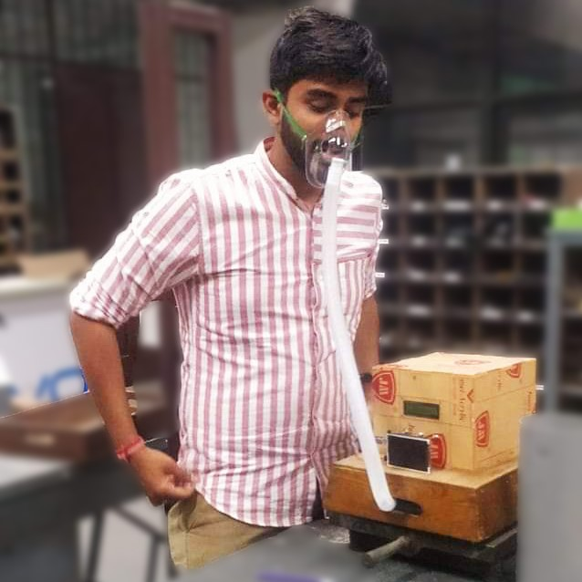

Literature survey
There are numerous studies and researches that conclude the fact that the mechanical ventilators used today remain bulky, costly, and only for the use in hospital settings. There is a large amount of work needed to move open source ventilators up to the level considered scientific-grade equipment, and even further work needed to reach medical-grade hardware. Furthermore, even the nurses should have thorough knowledge of the modes of ventilation, assessment, and the trouble shooting of ventilators and assessment and care of the patients requiring mechanical ventilation. The results also showed that there were issues with the sensors connected to the ventilators, noise level from alarms and routines concerning sanitation.
Origin of the Proposal
India has entered the third week of the nationwide lockdown due to the COVID-19 epidemic and the virus-infected cases are rising daily. COVID-19 is known to affect the patients' respiratory system and can lead to death if the patient is not provided ventilator support on time. A ventilator is a medical device that assists the patients' breathing and maintains the respiratory physiology functionality artificially. With the soring COVID-19 cases, it has been a great challenge to meet the demand for ventilators. The present government has also asked medical device manufacturers to assess the availability of ventilators and boost their production. However, the government is also looking for the proposal of cost-effective and indigenous made ventilators from government organizations, IITs, and startups. While most of the proposed and shared ventilator designs are based on bag valve masks (Ambu bag), there is no cost-effective design available that can replicate the functionality and operating conditions of the high-end ventilators. Here we propose a cost-effective microcontroller-based ventilator design that can be operated for controlled volume/pressure mode including Assist control (AC), Pressure Support (PS) and Pressure Support Ventilation (PSV) with positive end-expiratory pressure (PEEP). While these operating settings will be an integral part of the control algorithm, the basic setting can be adjusted by respiratory rate, tidal volume, FiO2, and PEEP.


Research Plan
Our goal is to live up to all the demands that are necessitated in an ailment like this. Therefore, we have tried to develop a ventilator which can facilitate us in solving the present market gap by being:
- Portable (backpack shaped design with small size and light weight)
- Economical
- Easily operable
- Switch based on/off
- Self - regulating (Timer based)
- Battery operated (Uninterrupted power supply options)
Bibliography
Su, X. et al. Silicon-based nanomaterials for lithium-ion batteries: a review. Adv. Energy Mater. 4, (2014).
Wu, H. & Cui, Y. Designing nanostructured Si anodes for high energy lithium ion batteries. Nano Today 7, 414–429 (2012).
Justification for the proposed equipment
The innovation which we have been working on is unique because of its small size and its gas pump mechanism which delivers the air into the patient. This gas pump mechanism consists of an ambu bag pressed by two mechanical crescent shaped cam arms, which are turned by the DC motor, to increase the pressure of the ambu bag to deliver air to the lungs. This unprecedented design solves two major problems:.
- Space: The current ventilators, even the less costly versions are huge in size. This increases their complexity and bulkiness, as they either have a linear actuator or a pneumatic system. Our design overcomes these problems and makes our device way smaller by using the above-mentioned technique.
- Efficiency: Due to more friction in the other methods, they lose energy in overcoming friction, and this decreases their efficiency. Our design has only rolling friction on the contact surface of the crescent part and ambu bag, which reduces energy wastage and increases efficiency.
Pressure and air are delivered to the patient by a simple pressing mechanism instead of bulky compressor-based operation of the current ventilator. This compressor-based operation increases the complexity of the ventilator, therefore making it difficult to operate; and also if anything goes faulty it takes a lot of time to be repaired as well. This complexity creates a problem in the increased load operations, required during the time of an epidemic like this. Our model has a very simple functionality and can be easily understood by the staff operating it. It also has easily replaceable parts for faster and effortless operations. Also due to the above-mentioned reason the power consumption of our ventilator is way lower than the current ventilator, so we have attached batteries and made it portable. This is to help in emergency conditions when there is a small time power outage or the patient is on the move. The principles of operation of the ventilator are illustrated by the block diagram in figure
The Compressed gas enters the ventilator from the input oxygen inlet and will be fed to the
main air unit through MCU controlled Inlet valve for inspiration cycle for expiration cycle the
air will be passed through pressure controlled air valve to maintain the PEEP.
The proposed design consist of microcontroller unit (MCU), air valves pressure sensors, air
unit digital display, manual input knobs and tunings as shown in figure 1. The developed
control and operating algorithm will be embedded to the MCU and the sensors (Pressure and
air unit) will be channelized to the MCU for operating and feedback loop. All the settings and
operational information such as flow rate, tidal volume, breathing frequency, lung pressure,
compliance etc. will be displayed in the digital display in real time. A warning alarm will also
be integrated to the proposed define for any error and failure detection. The whole ventilator
will be powered by the lithium-ion battery in case of power failure and will operate for 6-7
hour without external power.
The Ventilator technical information: Principles of Operation
- The Ventilator design will be simulated using microcontroller for both volume and pressure control.
- The inlet flow rate will be controlled by flow meter (a needle valve), which also regulate the oxygen flow rate.
- The breathing frequency and the tidal volume will be fixed in such a way that the single breathing stroke passes 300-1200ml of oxygen volume.
- The synchronization mode with the patient’s breathing pattern will be activated with the patient’s breathing pressure regulator control algorithm.
- The PEEP will be controlled using the input information by medical doctor and alarm will be set for these threshold pressure values.
- The input such as flow rate, tidal volume, pressure thresholds, and frequency can be manually entered.
- The Ventilator will be powered by the lithium-ion battery and 12V external power source.
- The ventilator will be operated for both constant and user defined flow rate settings.
- High inflation and low pressure visual alarm will be included.
- The failure detection and troubleshooting for leaks, elevated peak and plateau pressure and compliance problem.
Justification for consumable budget
The products available in the market today are way too costly. They cost around 10 lakh rupees while our product will only cost around 10-15 thousand rupees, but will deliver most of the functionalities. But, the current market is different, comparing our product with other low cost ventilators, we have smaller size and reduced power consumption and unlike others, our product is portable. The cost of manufacturing our product is amidst 10-12 thousand rupees while the selling price will be close to 20 thousand rupees. On the production of 1000 or more pieces, the cost of manufacturing will drop from the initial 20,000 rupees to 12,000 rupees. Due to this change in the cost of production and its simpler design, the product can be produced in more number in lesser time than the currently available ventilators.